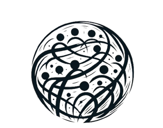

An introduction
Marketing for Betterment and Shield of Eden
Conceptual onboarding
Agenda
Three parts
- 01 Why we are here The problem with modern marketing, and what we want to do about it
- 02 Where we are The systems we have built so far and how they fit together
- 03 Where we want to be Our next phase and the milestones ahead
01
Transition
Why we are here
How marketing shapes people, society and the planet, and what Marketing for Betterment and Shield of Eden set out to change.
Context
Marketing in the modern era
Systematic
- Algorithms, experimentation, generative AI
- 1,000+ concurrent experiments at Booking.comThomke (2020)
Optimised for business outcomes
- Sales, engagement, revenue
- 97% of popular EU sites use dark patternsEuropean Commission (2022)
Wider effects rarely measured
- On people, society and the planet
- Not a business performance indicator
Evidence
Negative consequences of marketing
Individual
- Mental health
- Self-perception
- Time management

Society
- Value distortion
- Social polarisation
- Trust
Planet
- Overconsumption
- Waste generation
- Climate change
To address these challenges
We need to look at the environment that has created this equilibrium
Current equilibrium
Individuals
Lack of knowledge
- Limited awareness
- Subtle, yet effective
Heterogeneous effects
- Helps some, harms others
- Hard to know if you are affected
No empowerment tools
- No way to see or switch it off
- The issue gets normalised
Thus, there is no consumer demand for change.
Current equilibrium
Businesses
Incentives
- Inherent for-profit nature
- No demand, no change
Competition
- Effective strategies spread fast
- Deviation means elimination
No standards
- No guidelines
- No signalling power
Thus, businesses are stuck in a cycle of competitive optimisation where none can change behaviour.
Current equilibrium
Scientific community
Data constraints
- Business data sharing
- Data sensitivity
Experimental constraints
- Limited student samples
- Unrealistic settings
Technological constraints
- No live A/B testing infrastructure
- Slow compared with business
Thus, scientific evidence is slow, inconclusive and far behind industry.
Current equilibrium
Governments
No frameworks or standards
- Laws exist (e.g. the DSA)
- How to measure well-being?
Grey boundaries
- No longer limited to big tech
- Hard to audit at small scale
Heterogeneous effects
- One rule for everyone
- Cannot act at individual level
Thus, legislative action has been slow and weak compared with the threats.
Marketing for Betterment
Steering marketing toward individual, societal and environmental well-being by
Creating awareness
Fostering scientific research
Developing tools and technologies

Shield of Eden
A Chrome extension
- Create awareness on the spot
- Empower individuals
- Foster scientific research
Shield of Eden
What is Shield of Eden?
A privacy-first browser extension connected to a research platform
For users
For researchers
A field lab for studying digital persuasion, and a personal shield for users.
Functionalities
For researchers
- Invite university cohortsRun different experiments on different cohorts
- Run A/B testsCausal tests of techniques and interventions, several at the same time
- Behavioural dataPassive: clickstream, exposure to marketing techniques · Active: questionnaires following actions
- Define and track behavioural metricsFollowed throughout the experiment
- AI report generator SoonRuns routine analyses and generates scientific reports of the findings
Functionalities
For users
- See marketing techniquesGuardians show the techniques registered in the system, on the page where they appear
- Protect yourselfApply registered interventions that remove or reshape dark patterns
- Gamified learningLessons in the Learning Center on marketing interventions and how they work
- Help the environmentParticipation turns into real-world planting
- Get insight into your usage behaviourPersonal browsing metrics, such as time spent on websites, in the User Panel
Our goal for Shield of Eden
A platform accessible to all universities for scientific research
- A standard environment for causal A/B testing
- A fast and reliable setting for testing hypotheses
- Evidence for legislation and regulation of digital platforms
- Scientific knowledge delivered directly to end users
- Evidence for creating standards in marketing
We hope it pushes marketing research toward this field.
Our goal for Shield of Eden
A platform to create awareness and empower individuals
- Gamified learning about marketing techniques
- How to protect yourself against them
- Remove dark patterns in your browser
- Benefit from the latest findings

We hope it increases knowledge, makes techniques less effective, and creates demand for change.
02
Transition
Where we are
What we have built so far: the systems behind Shield of Eden and how they fit together.
Overview
How the pieces serve the solution
Measurement — quantify user behavior
Scientific research — A/B testing mixed with measurement
Awareness
Empowerment
Detection
Backbone
§2.1
Event Tracker
What it is Captures browsing events and batch-reports them to the server.
- Global events — on every site the user visits (page enter/leave, scroll, focus, visibility). Example: time spent with a tab open but looking elsewhere, so we can separate open time from active time.
- Site-specific events — named actions on particular sites. Example: a purchase on Amazon (total and item count) or watching a video on YouTube.
- Guardian activation events — when a guardian successfully runs (warn or action), that activation is recorded as an event. Example: a scarcity guardian warns on checkout → an activation event is stored and can later queue a questionnaire.
How it helps the whole Makes digital influence measurable in the wild so experiments, metrics, and insights have real behavioral data.
§2.2
Guardian System
What it is Packaged scripts that protect users from manipulative elements on real pages. Each released guardian has two levels the user can choose.
- Warn — default level. Shows a warning so the user sees the technique without changing the page. Example: on checkout, flag fake scarcity (“Only 2 left!”) before the user acts on it.
- Action — intervenes: remove, hide, reshape, or add UI to disarm the pattern. Example: hide the scarcity cue, or add a direct unsubscribe path on a hard-to-cancel site.
How it helps the whole Immediate individual protection without waiting for policy — and the interventions that research measures. A successful run also triggers a guardian-activation event in the Event Tracker (experimental guardians still run silently for the user).
§2.4
Questionnaires
What it is Short or long self-report forms. They are queued by event triggers — when a matching event fires (including a guardian-activation event), the questionnaire enters the user’s inbox if it is related to them, not already queued, and not inside its re-ask buffer.
How it helps the whole Captures what people felt — so behavior is interpreted alongside subjective experience, not guessed at.
Example After an Amazon purchase event — or after a guardian warns on that checkout — a short rating is queued in the extension popup for the user to answer or skip.
§2.5
Metrics
What it is One measurement engine: scheduled system metrics, on-demand platform metrics, and per-project research metrics.
How it helps the whole Every panel, study, and health check reads the same agreed numbers — including guardian and event-listener failure rates.
Example Nightly “average active time on site” for the User Panel; a researcher presses Run for “felt pressure by arm” on their project page.
§2.3
A/B Testing
What it is Assigns participating users to arms at user or session level, with consent and opt-out. It builds on the Guardian System (each arm is an experimental guardian, including a no-op control) and the Event Tracker (outcomes are measured from behavioral events — and often questionnaires).
How it helps the whole Produces causal evidence about which techniques harm and which interventions help — not just correlation.
Example Half of enrolled users get an experimental intervention guardian; half get an empty control. Events and questionnaires measure the difference.
§2.6
Learning Center
What it is Lessons that open with a video and continue into HTML slides — technique, protection, optional self-check.
How it helps the whole Builds lasting digital literacy so users recognize manipulative techniques even where no guardian exists yet.
Example From a guardian warning, Learn opens the confirmshaming lesson. First completion earns that lesson’s seed ball reward.
§2.7
Reporting
What it is A crowdsourcing path for finding marketing tricks in the wild. Users can become Eden’s Knights; knights submit “Report to Eden” from the popup or right-click. Admins review reports, group them by site, and queue guardian work.
How it helps the whole Knights extend detection far beyond what the core team can find alone — community eyes on the open web, with a review process that checks what is reported before it becomes a guardian.
Example A user earns knighthood, reports a confirmshaming pattern on a signup flow, and the team reviews it for a future guardian.
§2.8
Contribution
What it is Our rewarding system for user participation. Users earn seed balls for science, learning, and community — and each seed ball becomes a seed in soil to grow, planted with our partner.
How it helps the whole Ties digital contribution to real environmental impact, so participation is recognized without manipulative gamification.
Example A user finishes an experiment and a lesson, sees seed balls under “contribution to the planet,” and reads partner planting news.
§2.9
Main Website
What it is Public entry: mission, How, install, contribution & impact, invite-only auth, partnerships, legal.
How it helps the whole Explains the mission, recruits users and partners, and routes people to install the extension and create an account.
Example A student receives an invite email, signs up with a code (no email stored on the account), then signs in once inside the extension.
§2.10
User Panel
What it is Authenticated home: Profile, Guardians, Insights, Learning, Contribution, Activity, Settings — plus long questionnaires in a tab.
How it helps the whole One place for users to control protection, see their own data, manage the three opt-outs, and exercise data rights.
Example Deactivate all guardians, turn off questionnaires, download my data — all without digging through the extension popup alone.
§2.11
Admin Panel
What it is Operations and research control centre: users, research projects, guardians, events health, reports, contribution, platform settings.
How it helps the whole Staff run the platform and studies safely — each role limited to its scope; research admins are view-oriented, authoring stays with Super Admin / System Moderator.
Example Overview / Health highlights failed guardians and outdated event listeners so the next extension release can fix them.
03
Transition
Where we want to be
Our next phase: two milestones and what each one needs.
Next phase
Two milestones ahead
Presentation in Singapore · December
- Add the Researcher Panel
-
Add a findings analysis page
- Use AI to analyse the results and draft the write-up
- Add the Marketing for Betterment website
- Improve the Shield of Eden website
First trial launch at ESSEC · Winter
- A smoother, more stylish user interface
- Consult with the ESSEC research ethics committee
- More user insight features, to make the product appealing for end users
- Several guardians for the sites people use most: YouTube, social media platforms and online shops